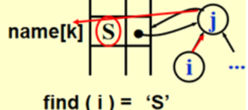

期中前内容
1 Algorithm analysis¶
Algorithm is a finite set of instructions to accomplish a particular task.
- Input 可以是0个，例如圆周率计算
- Output
- Definiteness 每个指令都是清晰的
- Finiteness （是一个相对概念）
- Effectiveness 正确性
program VS algorithm
program 不需要有限且不需要一个特定目标，是算法的具体实现
algorithm 是有一个特定目标的
What to Analyse¶
- 硬件和编译器的run times
- 时间复杂度、需要内存
- 一般分析平均复杂度和最坏复杂度
Asymptotic Notation¶
point: predict the growth 重点是趋势
\(O(N)\)限定了上限，\(\Omega(N)\)限定了下限，而\(\Theta(N)\)限制住了数量级
结论性：\({(logN)}^k\)是接近线性的
一般有效的算法时间复杂度都在O(NlogN)
一般规则：
- for循环：迭代次数*循环内运行时间
- 嵌套for循环：所有for循环大小的乘积*循环语句运行时间
- 连续语句：相加
- if/else：取max
- 注意判断题目中是否有不执行的语句
recursion：斐波那契数列例子 T(N) = T(N - 1) + T(N - 2) + 2，根据数学归纳法可证，\(\((3/2)^N < T(N) <(5/3)^N\)\)，复杂度很高
方法：
- \(T(2N)/T(N)\)代入
- 求极限
Compare the Algorithms¶
具体例子：
子序列最大和问题：
考虑for loop的时候应计算worst case；
优化1：ThisSum不置0；
优化2：Divide and Conquer 分治法
- 使用递归将数据不断二分
- 逐个计算、比较并合并，同时计算两个\(N/2\)中最优解的两端并比较
复杂度分析：\(T(N) = 2T(N/2) + cN, T(1) = O(1)\)
//分成两半求解+整个序列遍历，遍历起点是左最大序列的左端，遍历终点是右最大序列的右端
\(T(N) = 2[2T(N/2^2)+cN/2]+cN = 2^kO(1) + ckN, where N/2^k = 1\)
\(\rightarrow T(N) = O(NlogN)\)
优化3：On-line Algorithm \(T(N) = O(N)\)
只扫描一次，遇到小于0的ThisSum及时置0
在线算法核心：来一个处理一个数，不把所有数装入内存或者读取内存，memory是efficient的，任何时间都能得到一个目前的最佳结果
Logarithms in the Running Time¶
递归算法：find_x[lb,ub]
\(T(N) = T(N/2) + O(1) \rightarrow T(N) = O(logN)\)
Checking Your Analysis¶
2 Lists¶
Abstract Data Type (ADT)¶
抽象数据类型：将数据类型的定义和实际操作分离
Objects VS Operations
基本操作：¶
-
简单数组操作
- 数组大小需要被评估，有顺序、查找比较快，但是插入和删除慢
-
简单链表操作
-
无顺序、申请内存（malloc系统级操作）和查找很慢，不过插入和删除快（但是寻找的过程还是O(N)）
-
断链的内存找不回来且无法free
- 双向链表：方便查找前一个，但是不从根本上解决查找线性复杂度问题
-
多项式的表示：¶
- 数组
- 链表
Multilists:¶
eg.学生选课

- 优势：节省内存，有多少个item就是选了多少节课
链表的游标实现¶
Next pointer 存的是下一个数据的下标
数组实现列表
1 2 3 4 | |
如果在索引是k的结点后面插入一个结点，新结点的索引是n
1 2 3 | |
由于缺少内存管理，array很快就会满。
3 Stacks and Queues¶
3.1 The Stack ADT¶
Stack: a Last-In-First_Out
和链表区别：stack是指向前一个数据，最后有一个指针指向栈顶

-
operations: （Pop和Top操作在空栈情况下会报错，是逻辑错误；Push操作在满栈情况下会报错，是操作错误）

- Push 插入
- Top 置顶
- Pop 删除
- 避免malloc/free：不执行真正的deletion，把数据放到另外一个链表
-
应用：
-
检查括号是否平衡
- 思路：左括号Push，右括号（和top匹配）Pop
-
计算器问题（postfix）
- infix to postfix：把数字放在运算符前面，运算符按优先级排序
- 遇到数字Output
- 遇到运算符，空栈或者比top优先级高就push
- 遇到运算符，比top优先级低或相等就pop所有比它优先级高或相等的运算符最后将此运算符push
- 括号：


- 遇到数字就push，遇到运算符就pop两个然后把运算结果push进去，最后pop最上面的结果
- 时间复杂度O(N)
- infix to postfix：把数字放在运算符前面，运算符按优先级排序
-
系统栈问题：如果一直使用递归会占内存，时间复杂度也高
-
3.2 The Queue ADT¶
Queue: a First-In-First-Out list
-
operations：
- Enqueue 队尾插入
- Front
- Dequeue 队头删除
-
解决线性queue内存浪费问题->circular queue
- 在仅剩一个空item的时候如果再插入一个item，rear和front差1，和初始状态一样，无法区分满还是空状态
- 解决方案：空着（浪费一个空间，但是时间开销小）/加一个size判断（时间开销大）
- 陷阱：没有count操作的时候，必须空出一格
- 在仅剩一个空item的时候如果再插入一个item，rear和front差1，和初始状态一样，无法区分满还是空状态
4 Trees¶
Trees Preliminaries¶
- 从祖先开始：Lineal Tree
-
从儿子开始：Pedigree Tree (Binary Tree)
-
用法：组织结构、搜索、决策树
-
定义：树是节点的集合
-
集合可以为空
-
否则，一棵树由
- 一个被称为根的区分节点r
- 零个或多个非空(子)树T1, ... , Tk（一个节点除了根节点有且仅有一个父节点）
组成，每个树的根都通过从r的有向边连接
-
-
注意：
- 子树不能连接在一起（Tree是没有环路的），树中的每个节点都是某一个子树的根
- N个节点的树有N-1个edge
- 画图时通常将根节点画在最上面
- 所有操作从根开始
- 操作基本都是递归的
-
组成： parent 和 children 不是对称的，是有指向的
-
数据结构实现
- 一维数组：


- 一维数组：
not unique since the order of the child is not unique
Binary Trees¶
- no node can have more than two children
-
Expression Trees
- 遇到运算符，最后两个元素出栈，构成以运算符为r的一个元素，整体入栈
- 特点：
- 所有操作数顺序不变且都是叶节点
- 根节点是运算的最后一步
-
树的遍历
- 先序遍历

- 后序遍历

- 层次遍历 - queue

- 中序遍历（递归法：）

- 中序遍历的非递归形式： - stack使用自己的栈代替系统规定的栈
- 先序遍历
-
例子
- 分级文件系统中的目录列表
Threaded Binary Trees¶
-
利用Tree中的空节点加速中序遍历
-
左指针空：指向中序遍历前一个；右指针空：指向中序遍历后一个。
-
创建一个假头节点，其左子节点指向第一个节点，右节点指向自己
-

-
多了两个Boolean用于判断左右节点是否为thread
-
例子：
第一个有内容的节点的左节点指向dummy head node，最后一个有内容的节点的右节点指向dummy head node的右节点；dummy head node左边指向根节点，右边指自己
Properties of Binary Trees¶
- Skewed Binary Trees
- Complete Binary Trees - all the leaf nodes are on two adjacent levels
Binary Search Trees (BST)¶
数据是动态变化的
- definition
继承了所有二叉树的特点，是递归定义的
- ADT
- Objects: 具有零个或多个元素的有限有序列表
-
Operations:
-
Implementations
- Find
递归版本：
时间复杂度：\(T( N ) = S ( N ) =O( d )\), where d is the depth of X; 循环版本：
1 2 3 4 5 6 7 8 9 10 11 12
Position Find( ElementType X, SearchTree T ) { if ( T == NULL ) return NULL; /* not found in an empty tree */ if ( X < T->Element ) /* if smaller than root */ return Find( X, T->Left ); /* search left subtree */ else if ( X > T->Element ) /* if larger than root */ return Find( X, T->Right ); /* search right subtree */ else /* if X == root */ return T; /* found */ }1 2 3 4 5 6 7 8 9 10
Position Iter_Find( ElementType X, SearchTree T ) { /* iterative version of Find */ while ( T ) { if ( X == T->Element ) return T ; /* found */ if ( X < T->Element ) T = T->Left ; /*move down along left path */ else T = T-> Right ; /* move down along right path */ } /* end while-loop */ return NULL ; /* not found */ } - FindMin & FindMax
Min:Max:1 2 3 4 5 6 7 8
Position FindMin( SearchTree T ) { if ( T == NULL ) return NULL; /* not found in an empty tree */ else if ( T->Left == NULL ) return T; /* found left most */ else return FindMin( T->Left ); /* keep moving to left */ }1 2 3 4 5 6 7
Position FindMax( SearchTree T ) { if ( T != NULL ) while ( T->Right != NULL ) T = T->Right; /* keep moving to find right most */ return T; /* return NULL or the right most */ } - Insert
构建BST就是insert的叠加 - malloc
- 赋值
- 左右孩子赋NULL
忽略insert的具体操作，其实就是search操作的框架
1 2 3 4 5 6 7 8 9 10 11 12 13 14 15 16 17 18 19 20 21 22
SearchTree Insert( ElementType X, SearchTree T ) { if ( T == NULL ) {/* Create and return a one-node tree */ T = malloc( sizeof( struct TreeNode ) ); if ( T == NULL ) FatalError( "Out of space!!!" ); else { T->Element = X; T->Left = T->Right = NULL; } } /* End creating a one-node tree */ else /* If there is a tree */ if ( X < T->Element ) T->Left = Insert( X, T->Left ); else if ( X > T->Element ) T->Right = Insert( X, T->Right ); /* Else X is in the tree already; we'll do nothing */ return T; /* Do not forget this line!! */ }
防止malloc报错：把buffer的指针申请一个比较大的内存
处理重复的数：不添加或为每一个node加入count，取决于具体的问题 - Delete
- 删除叶节点：直接将父节点的链接变成NULL
- 删除degree为1的节点：直接让孩子去替代他那个位置
- 删除degree为2的节点：
- 将该节点替换为左子树中最大的节点或右子树中最小的节点，尽量删可以减少树的高度的节点
- 将替换节点从子树中删除
- Lazy deletion: 如果没有很多删除，那么可以使用延迟删除：向每个节点添加一个标志字段，以标记节点是活动的还是已删除的。因此，我们可以删除一个节点，而不会释放该节点的空间。如果重新插入已删除的键，则不必再次调用malloc。
1 2 3 4 5 6 7 8 9 10 11 12 13 14 15 16 17 18 19 20 21 22 23 24 25 26
SearchTree Delete( ElementType X, SearchTree T ) { Position TmpCell; if ( T == NULL ) Error( "Element not found" ); else if ( X < T->Element ) /* Go left */ T->Left = Delete( X, T->Left ); else if ( X > T->Element ) /* Go right */ T->Right = Delete( X, T->Right ); else /* Found element to be deleted */ if ( T->Left && T->Right ) { /* Two children */ /* Replace with smallest in right subtree */ TmpCell = FindMin( T->Right ); T->Element = TmpCell->Element; T->Right = Delete( T->Element, T->Right ); } /* End if */ else { /* One or zero child */ TmpCell = T; if ( T->Left == NULL ) /* Also handles 0 child */ T = T->Right; else if ( T->Right == NULL ) T = T->Left; free( TmpCell ); } /* End else 1 or 0 child */ return T; }
- 删除叶节点：直接将父节点的链接变成NULL
- Find
递归版本：
-
Average-Case Analysis
树的高度取决于插入的顺序
5 Priority Queues¶
需要优先级的时候需要此数据结构
操作：
- 优先级排序初始化
- 插入
- 删除最小
- 找最小
实现方式及算法复杂度：

相比之下Linked List是最优解，但是仍有一个N数量级的复杂度
BST的插入和删除相比之下更优，插入删除的复杂度都是logN数量级的，平衡树更快但没必要（有指针，很危险）
Binary Heap¶
层次遍历是连续的，逻辑上可以成为一棵二叉树，但是实际的实现还是数组
完全二叉树：

在这里0节点是空出的，且完全二叉树和最下面这层有多少个没有关系
在完全二叉树的前提下，因为树的高度是确定的，所以插入删除操作的复杂度也是有确定关系的
寻找父子节点（真正的实现是位移）：
代码实现：
- 初始化建堆
1 2 3 4 5 6 7 8 9 10 11 12 13 14 15 16 17 18 | |
最小堆：既是完全二叉树也是最小树（父节点一定比所有子节点小，没有左右大小要求），最大堆同理。
基本操作：
- 插入：通过下标换算不断和父节点比较，如果比父节点小就交换（3步）并且进行下一步比较，不断迭代，找到比它大的父节点或到了根节点就结束
1 2 3 4 5 6 7 8 9 10 11 12 13 14 | |
\(T (N) = O ( log N )\)
- 删除最小元素：先构建好一个完全二叉树，再完成顺序排列
1 2 3 4 5 6 7 8 9 10 11 12 13 14 15 16 17 18 19 20 21 22 23 24 25 26 27 28 29 30 31 | |
-
其他操作
-
查找除最小元素之外的任何元素都必须对整个堆进行线性扫描
-
DecreaseKey ( P, ▲, H ) -> Percolate up 上浮
-
IncreaseKey ( P, ▲, H ) -> Percolate down 下沉
-
Delete ( P, H )
- DecreaseKey(P, \(\infty\), H)
- DeleteMin(H)
-
BuildHeap ( H )
-
如果使用N次插入，\(T(N)=O(NlogN)\) -> too slow
-
在现成的树的基础上调整，从倒数第二层开始，调整一半的节点即可，\(T(N) = O(N)\)

-
-
-
堆排序 =
- 建堆 \(O(N)\)
- N次deletemin \(N*O(logN)\)
- 总时间复杂度：\(O(NlogN)\)，worst case 和 best case 都一样
-
应用：找到第k大的元素
- 建堆
- k次deletemin/n-k次deletemin（看哪个小决定建不同的树）
-
全排序：queue sort；取top k/1000/...：heap -\(O(N) + O(klogN)\)
-
d-Heaps ---- All nodes have d children
- DeleteMin每次比k次，时间复杂度为\(O(dlog_dN)\)
- \(*2\)或者/2都是位运算操作，但是\(*d\)或者/d就不是
- 当优先级队列太大而无法完全放入主存时，d堆就变得有趣了
6 The Disjoint Set ADT¶
Equivalence Relations¶
x~y -> x and y of a set S(都是定义在一个集合上的) are in the same equivalence class
- symmetric 对称
- reflexive 自反
- transitive 传递
The Dynamic Equivalence Problem¶
算法功能：给定一个等价关系~，判定任意a和b是否为a ~ b
1 2 3 4 5 6 7 8 9 10 11 12 13 14 15 16 | |
实现：forest；指针是反向的

操作：
- Union(i, j)：将\(S_i\)和\(S_j\)替换成\(S=S_i\bigcup S_j\)
- Find(i)：找到包含i的\(S_k\)
Basic Data Structure¶
- Union&Find
将其中一个根的父指针设置为另一个根- 链表操作：

- 实现1：

- Union

1 2
void SetUnion ( DisjSet S, SetType Rt1, SetType Rt2 ) { S [ Rt2 ] = Rt1 ; } - Find
- 链表：
- 数组：
1 2 3 4
SetType Find ( ElementType X, DisjSet S ) { for ( ; S[X] > 0; X = S[X] ); return X ; }
- 建立等价关系
1 2 3 4 5 6 7 8 9 10 11
Algorithm using union-find operations { Initialize Si = { i } for i = 1, ..., 12 ; for ( k = 1; k <= 9; k++ ) { /* for each pair i ≡ j */ if ( Find( i ) != Find( j ) ) SetUnion( Find( i ), Find( j ) ); /*最坏时间复杂度O(N^2)*/ } }
- Union
- 实现2：改变Union操作（smart union）
寻找更小的cluster被合并
记录Size: 用当前这棵树的根节点记录这棵树的大小，因为正数已经用来表示父子节点关系了，所以用负数来储存避免出错；每棵树在最开始的时候大小为1，故初始化为-1。

- 实现3：Union by Height
将矮的树并到高的树上例如，如果我们将所有集合放在一个队列中，并重复地将前两个集合从队列中取出，然后将联合放入队列中，就会出现最坏的情况。如果查找比联合多很多，则运行时间比快速查找算法更差。此外，应该清楚的是，联合算法可能没有更多的改进。这是基于这样一种观察，即任何执行联合的方法都将产生相同的最坏情况树，因为它必须任意地打破联系。因此，在不完全修改数据结构的情况下，加快算法速度的唯一方法是在查找操作上做一些聪明的事情。这种巧妙的操作被称为路径压缩。路径压缩是在查找操作期间执行的，与执行联合所使用的策略无关。假设操作是find(x)。路径压缩的效果是，从x到根的路径上的每个节点都将其父节点更改为根节点。图8.14显示了find(15)之后的路径压缩对图8.12的一般最差树的影响。路径压缩的效果是，随着额外的两个指针移动，节点13和14现在离根更近一个位置，节点15和16现在离根更近两个位置。因此，未来对这些节点的快速访问将(我们希望)为进行路径压缩付出额外的工作。如图8.15中的代码所示，路径压缩是对基本查找算法的一个微不足道的更改。对find例程的唯一更改是使S[x]等于find返回的值;因此，在递归地找到集合的根之后，使x直接指向它。这将递归地发生在到根的路径上的每个节点上，因此这实现了路径压缩。正如我们在实现堆栈和队列时所说，修改被调用函数的参数不一定符合当前的软件工程规则。有些语言不允许这样做，所以这段代码可能需要修改。
Read Figure 8.13 on p.273
- 实现4：Union by Size with Path Compression 路径压缩
目的： 让所经过的节点都指向父节点
让所经过的节点都指向父节点1 2 3 4 5 6 7 8 9 10 11
SetType Find ( ElementType X, DisjSet S ) { ElementType root, trail, lead; for ( root = X; S[ root ] > 0; root = S[ root ] ) ; /* find the root */ for ( trail = X; trail != root; trail = lead ) { lead = S[ trail ] ; S[ trail ] = root ; } /* collapsing */ return root ; }
优化后：与Union-by-Height不兼容，因为它改变了高度。Just take “height” as an estimated rank. - 实现5：Union by Rank（已经经过路径压缩）


- 链表操作：